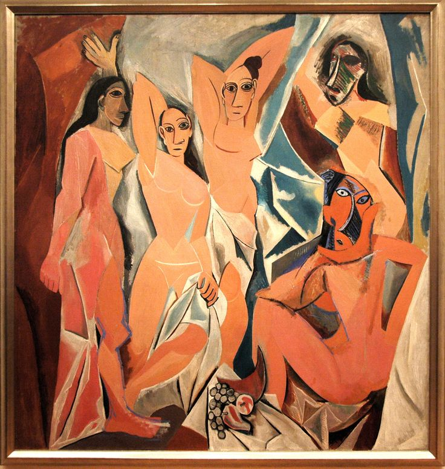
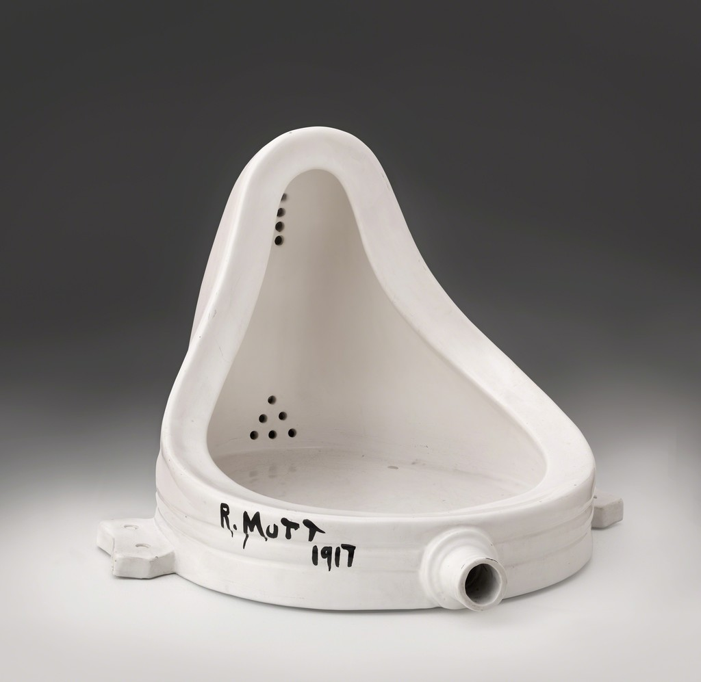
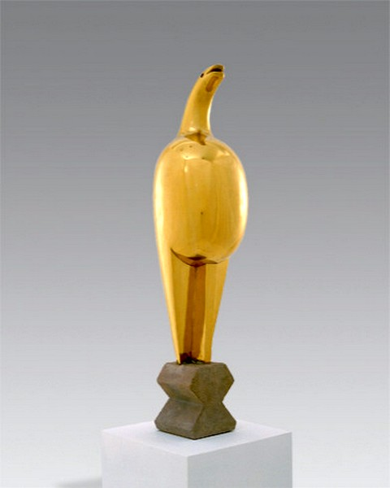
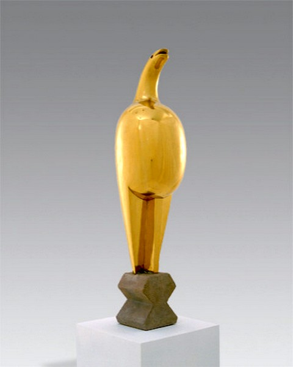

-
Expresionismul
Artiştii care au ilustrat acest curent au plecat de la dorinţa de a demonstra falsitatea ambiţiei pozitiviste de a cataloga, defini şi încadra societatea într-un sistem organizat până la perfecţiune. Acţiunea lor încerca să scoată la lumină viciile şi ipocriziile societăţii celei de a doua jumătăţi a secolului al XIX-lea. Poate cea mai ilustrativă trăsătură caracteristică se referă la opoziţia sa categorică faţă de pozitivism. A fost o artă care a criticat influenţa impresionismului în pictură şi tendinţa dată de hedonismul şi fericirea promovate prin tablourile unor pictori precum Manet, Monet, Degas. În viziunea expresioniştilor tabloul nu trebuia să fie un obiect de decor, ci doar expresie. Ceea ce contează în primul rând sunt emoţiile artistului transpuse pe pânză într-un mod de multe ori violent. Expresionismul a îmbrăcat forme diferite şi s-a manifestat cu precădere în spaţiul francez şi german.
-
În Franţa
În Franţa poate cea mai elocventă grupare în acest sens a fost aceea a fovismului. Numele s-a datorat criticului de artă Louis Vaucelles, extrem de reticent de altfel faţă de noile manifestări artistice, care a denumit prima expoziţie de acest gen din 1905 de la Paris ca fiind o „cuşcă a fiarelor” (la cage aux fauves). Intenţia criticului a fost transformată de artişti într-un simbol care semnifica noua orientare artistică. Influenţele pictorilor post-impresionişti Paul Gauguin şi mai ales Vincent van Gogh sunt evidente dar totodată tablourile respective se individualizează prin vigoarea în privinţa culorilor şi a contrastelor. Unul dintre principalii reprezentanţi a fost Maurice de Vlaminck.( Satul
 ,
Remorchere pe Sena
)
,
Remorchere pe Sena
) -
În Germania
În Germania fenomenul expresionismului s-a manifestat în principal în cadrul a două grupuri, Die Brűcke şi Der Blaue Reiter.
-
Die Brűcke
Grupul Die Brűcke (Podul) apare la Dresda în acelaşi an, 1905, în care la Paris avea loc vernisajul expoziţiei artiştilor fovişti. Fondatorii au fost Ernst Ludwig Kirchner (1880-1938) ( Şcoala de dans , Autoportretul ), ideologul mişcării şi liderul grupului, Fritz Bleyl (1880-1966), Erich Heckel (1883-1970) şi Karl Schmidt-Rottluff (1884-1976), toţi patru studenţi la arhitectură. Lor li se vor alătura Emil Nolde (1867-1956)şi Max Pechstein (1881-1955) în 1906, precum şi Otto Müller (1874-1930) şi olandezul Kees van Dongen (1877-1968). Deşi gruparea s-a autodizolvat destul de repede, după numai opt ani de la înfiinţare, a reuşit să se afirme în polemica artistică a vremii. Numele generic sub care trebuiau să se asocieze noile energii nu a fost ales întâmplător, ci exprima dorinţa de a aduna „toate elementele revoluţionare”, pe toţi cei care doreau să împărtăşească principiile cuprinse în manifestele grupului. Principiul de bază era dat de dorinţa sfărâmării oricărui canon care ar putea împiedica libera manifestare a inspiraţiei şi proclamarea supremaţiei emoţiei artistului. Chiar dacă la început tablourile lor sunt încă influenţate de impresionism, pictura lor nu are aproape nimic din hedonismul şi strălucirea acestuia. Nota generală este mai degrabă dată de un schematism grosolan şi dezordonat.
-
Der Blaue Reiter
Grupul Der Blaue Reiter (Cavalerul albastru) a fost întemeiat de Wassily Kandinsky (1866-1944)(Păsări acvatice, Acoperiş albastru) şi Franz Marc (1880-1916) la München în 1911. Lor li se alătură alţi câţiva pictori, dintre care cei mai importanţi au fost fraţii David şi Vladimir Burliuk şi mai ales Paul Klee(1879-1940). Deşi toţi aceştia au ceva în comun cu membrii celuilalt grup expresionist german, deosebirile sunt frapante: se declară categoric împotriva impresionismului, a pozitivismului şi împotriva societăţii epocii lor.
-
-
-
Cubismul
Prima expoziţie cubistă a fost organizată în 1911 la Paris în cadrul unei manifestări ce dorea distanţarea faţă de tot ce însemna artă oficială, recunoscută şi premiată. Cu trei ani înainte, acelaşi critic care, în dispreţul său profund, botezase fără să vrea curentul fovist, Louis Vauxcelles, spusese despre pictura lui Braque că seamănă cu nişte cuburi. De aici contemporanii au adoptat numele iar cubismul se născuse. Unii dintre scriitorii epocii, buni prieteni cu pictorii cubişti, şi care încearcă să explice această tendinţă nouă din pictură prin asociere cu una similară din literatură, precum Apollinaire, Max Jacob, Reverdy, au încercat să definească mişcarea. Max Jacob, multă vreme prieten apropiat al lui Picasso, spune la un moment dat: „Cubismul în pictură este arta de a lucra tabloul pentru el însuşi în afara a ceea ce el reprezintă şi de a da construcţiei geometrice primul loc, practicând numai iluzia la viaţa reală. Cubismul literar face acelaşi lucru în literatură, servindu-se de realitate ca de un mijloc şi nu ca de un scop”. Din grupul cubist, în special trei artişti se detaşează ca influenţă, puternică afirmare şi notorietate. Pablo Picasso (1881-1973), in tablourile sale ( Mare cu cer rosu , Domnişoarele din Avignon  , Arlechin , Trei dansatoare , Portretul lui Ambroise Vollard ) dar şi în sculptură şi grafică, artistul manifestă apetenţa pentru organizarea spaţiului într-o multitudine de faţete care divizează volumele. Georges Braque (1882-1963), bun prieten cu Picasso, vine şi el dintr-o familie de pictori şi decoratori. Spre deosebire de tovarăşul său, Braque se va dovedi un moderat iar tablourile sale ( Masa muzicianului , Case la Estaque , Vioară şi ulcior ) readuc în atenţia privitorului forme angulare care tindeau însă tot mai mult spre curbe graţioase. Fernand Léger (1881-1955),în general, este considerat ca fiind opusul lui Braque. Stilul său ( Contraste de forme , Mecanicul , Fluturi şi flori
 ) transformă cubismul, îl dezvoltă într-o manieră originală într-un sens mecanic, aproape matematic. În anii de dinaintea primului război mondial, la care a participat asemeni lui Braque şi al altor pictori, ajunsese la o pictură puternic influenţată de o manieră abstractă.
Experienţa războiului l-a schimbat, aşa cum a recunoscut de altfel, şi a încercat să includă în arta sa emoţiile vieţii de pe front. De aceea poate pictura pe care o practică este una umanistă care oglindeşte sensul pozitiv al vieţii, fără să abdice de la crezul luptei cu societatea.
) transformă cubismul, îl dezvoltă într-o manieră originală într-un sens mecanic, aproape matematic. În anii de dinaintea primului război mondial, la care a participat asemeni lui Braque şi al altor pictori, ajunsese la o pictură puternic influenţată de o manieră abstractă.
Experienţa războiului l-a schimbat, aşa cum a recunoscut de altfel, şi a încercat să includă în arta sa emoţiile vieţii de pe front. De aceea poate pictura pe care o practică este una umanistă care oglindeşte sensul pozitiv al vieţii, fără să abdice de la crezul luptei cu societatea.
-
Futurismul
Caracteristici Futurismul s-a deosebit de celelalte curente de avangardă deoarece la lansarea primului manifest în 1909 nu exista deja un grup sau o mişcare care să grupeze diverşi pictori, să organizeze expoziţii, cu alte cuvinte să aibă o activitate recunoscută ca atare în spaţiul public. De data aceasta vom avea întâi un manifest, un act de naştere, iar identitatea curentului se va construi ulterior, chiar dacă ea va prinde consistenţă destul de repede. Fondatorul a fost pictorul şi scriitorul italian Filippo Tommaso Marinetti care publica la Paris, în „Le Figaro”, primul manifest al mişcării, cel în jurul căruia se vor aduna reprezentanţii noului val. Chiar dacă futurismul s-a manifestat şi în literatură iar influenţa sa s-a resimţit cu precădere în Rusia, cei mai importanţi reprezentanţi au fost artişti plastici iar patria sa a fost Italia. Declaraţiile cuprinse în manifestele futuriste, adevărate programe de acţiune, au fost ilustrate de scrierile şi în special operele artistice ale membrilor care au subscris acestor principii. Dorinţa majoră era aceea de a scoate climatul cultural italian al epocii din starea de provincialism şi de a conecta Italia la veritabila dezbatere intelectuală şi culturală a Europei. Ceea ce a şocat de la început a fost violenţa limbajului folosit şi faptul că această aspiraţie către modernitate s-a dorit o antiteză violentă atât faţă de arta oficială cât şi faţă de o ordine socială considerată depăşită. Pentru acest motiv futurismul a fost legat de către unii specialişti de regimul fascist italian pe care l-ar fi justificat şi susţinut în bună măsură şi chiar considerat uneori drept o fază premergătoare fascismului. Umberto Boccioni (1882-1916) s-a afirmat ca un teoretician de forţă şi a fost preocupat să definească futurismul dintr-o perspectivă mai clară decât cea regăsită de Marinetti. Cateva din operele sale sunt: tablourile Oraşul care suie , Viziuni simultane , Dinamismul unui corp omenesc . Gino Severini (1883-1966) a datorat mult întâlnirii cu cel care i-a devenit bun prieten, Boccioni, care îl determină să devină pictor. În tablourile sale ( Tren într-un peisaj , Hieroglifă dinamică la balul Tabarin , Pan-Pan la Monico ) a urmărit descompunerea mişcării în pictură.
-
Futurismul Italian
In Italia, futurismul a răspuns, într-o formă violentă şi poate uneori nu suficient de clară, dorinţei de reînnoire. Mulţi din adepţii noului curent proveneau din rândurile anarhiştilor sau din grupurile naţionaliste. Marinetti a strâns lângă el câţiva tineri pictori milanezi, cu ajutorul cărora va publica în 1910 „Manifestul pictorilor futurişti”, Boccioni, Carrà, Russolo, Balla şi Severini. Anarhismul, naţionalismul, anticlericalismul la care nu putem uita să adăugăm marxismul unora, al lui Boccioni de exemplu, se topeau toate într-un spirit agresiv şi răzvrătit care dorea să şocheze gustul publicului burghez. Naţionalismul exacerbat, promovat mai ales de Marinetti, a apropiat futurismul de mişcarea fascistă iar spre deosebire de regimul nazist care a interzis manifestările artei avangardiste şi a exclus din expoziţii şi muzee pânzele de acest gen, regimul fascist venit la putere ia încurajat pe futurişti. Agresiunea Italiei în Africa a fost proclamată de grupul respectiv drept o „mare oră futuristă”.
-
-
Dadaismul
Izbucnirea primului război mondial a oferit neutrei Elveţii şansa să joace un rol important în mişcarea de avangardă europeană. La Zürich s-au întâlnit scriitori şi artişti aflaţi în exil, diferiţi prin originea lor dar nemulţumiţi şi dornici de a găsi noi mijloace de exprimare în domeniul literaturii şi artei plastice. Scriitorul Tristan Tzara, considerat întemeietorul curentului, pictorul Marcel Iancu, amândoi născuţi în România, artistul alsacian Hans Arp şi poetul german Richard Huelsenbeck erau uniţi de un sentiment de aversiune şi dezgust faţă de arta tradiţională şi de factură post-impresionistă dar în egală măsură şi faţă de curentele de avangardă deja existente, precum cubismul sau expresionismul. Locul de întâlnire, Cabaretul Voltaire, aflat pe o stradă pe care locuia şi Lenin împreună cu soţia sa, şi ei exilaţi, a devenit locul de naştere al acestei mişcări care va face înconjurul Europei şi al Americii. Un reprezentant de marcă al acestui stil este Marcel Duchamp (1887-1968). În 1911 a expus una din primele picturi care i-au adus notorietatea, Nud coborând o scară , urmată de Regele şi regina înconjuraţi de tineri „iuţi” sau Tânăra căsătorită , în care tonuri de brun se amestecă printre figuri în mişcare care lasă impresia unor maşinării neobişnuite. După un popas nu foarte lung la Paris şi în Elveţia, Duchamp s-a îndreptat spre America unde a expus la Salonul Independenţilor un pisoar al cărui titlu, Fântână  , a şocat publicul.
-
Sensul termenului de “dada”
Cuvântul Dada are în primul rând o semnificaţie şi nu atât un sens. Tristan Tzara, inventatorul lui, a dorit să exprime o stare de spirit şi să găsească un simbol, lingvistic dar nu numai, care să se identifice cu scopul grupului. Termenul a fost ales aleatoriu iar diferitele încercări ale unor specialişti de a-i găsi un sens şi o etimologie nu pot decât eşua fie şi numai pentru motivul că Tzara şi tovarăşii săi nu au dorit vreun moment să găsească o definiţie în limitele căreia să se exprime, ci au urmărit acţiunea în stare pură.
-
Principalele trăsături
Dacă în general celelalte curente avangardiste se împotriveau falselor ambiţii ale paradigmei pozitiviste, dadaismul împingea negarea până la consecinţe extreme, punând sub semnul întrebării însăşi raţiunea. Dada era o mişcare care se împotrivea nu numai valorilor şi tradiţiilor societăţii burgheze dar respingea chiar şi conceptele de artă şi literatură considerate, în ultimă instanţă, produse ale aceleiaşi societăţi. Avangarda de până la ea era combătută la fel de vehement şi asimilată culturii burgheze prăfuite şi depăşite. Mijloacele sale sunt radicale şi de o violenţă extremă exprimată de multe ori în public pentru a şoca şi disloca un auditoriu considerat gol şi imobil. Principalele categorii ale mişcării sunt acţiunea, spontaneitatea, gestul înţelese ca permanente provocări chiar dacă, sau poate tocmai de aceea, se ajunge la scandal de multe ori. Îndreptată împotriva tradiţiei şi a modernismului în egală măsură, mişcarea Dada s-a transformat dintr-o polemică artistică şi literară într-un mod de viaţă, argument suprem în spijinul credinţei în adevărul său. În ceea ce priveşte arta, dadaiştii au respins până şi termenul de „creaţie”, ei şi-au considerat operele mai degrabă „produse” dar unele care nu au o valoare „de piaţă” deoarece arta nu trebuie comercializată. Obiectele vor lua locul culorii şi penelului, de fiecare dată altele pentru că repetiţia duce la sucombarea artei dadaiste.
-
-
Suprarealismul
Trăsăturile fundamentale ale suprarealismului Mişcarea suprarealistă şi-a găsit fără doar şi poate în Dada o sursă de inspiraţie dar ceea ce a deosebit-o în mod clar a fost preocuparea pentru a defini noua doctrină. Dacă dadaismul distrusese în numele libertăţii absolute, o libertate slujită de apetenţa deplină pentru negaţie, fără să pună ceva în loc, suprarealismul a încercat să ofere o alternativă realizabilă în practică. Libertăţii totale şi abstracte promovate de Dada suprarealismul i-a opus un sistem de valori aplicabil societăţii de după primul război mondial. De asemenea, dacă mişcarea dadaistă şi-a bazat căutările pe ruptura dintre artă şi societate, dintre lumea fanteziei scriitorilor şi pictorilor şi realitate, suprarealismul a încercat să pună capăt acestei înfruntări şi să găsească o soluţie, un element de legătură între cele două elemente. La un moment dat unii dintre conducătorii mişcării suprarealiste vor intra în Partidul Comunist pentru a marca şi mai clar tentaţia revoluţiei ca mijloc de distrugere a societăţii. În plus, tema libertăţii este foarte importantă, precum şi preocuparea pentru destinul omului şi înţelegerea rostului său iar literatura şi arta nu sunt altceva decât mijloace şi nu scopuri în acest sens. Mişcarea suprarealistă nu a fost un tot, un monolit compact şi Nefisurat. Primul Manifest suprarealist lansat în 1924 de scriitorul francez André Breton era asumat şi de alţi literaţi, cum ar fi Louis Aragon, Paul Eluard, Robert Desnos, Roger Vitrac sau Philippe Soulpault, ultimii doi însă vor protesta trei ani mai târziu când ceilalţi se vor înscrie în Partidul Comunist francez şi se vor retrage în semn de frondă. Încă de la început André Breton, liderul grupului, a încercat să dea o definiţie noului curent, astfel că, în Manifestul amintit, putem citi: „Suprarealismul este automatism psihic pur prin mijlocirea căruia ne propunem să exprimăm, fie verbal, fie în scris ori în alte chipuri funcţionarea reală a gândirii; este dictatul gândului cu absenţa oricărui control exercitat de raţiune, dincolo de orice preocupare estetică sau morală”. Automatismul poetic şi-a găsit un corolar în cel artistic. Unul dintre primii pictori atraşi de provocarea suprarealistă a fost Max Ernst care i-a părăsit pe dadaişti şi care i-a influenţat decisiv pe noii săi colegi. Totodată, aceştia din urmă au suferit influenţa picturii metafizice practicată de Giorgio de Chirico. Poate cel mai bun exemplu este cel al lui Salvador Dali (1904-1989) care prin creaţiile sale ( Bacanală , Persistenţa memoriei ) a propus drept metodă de exprimare „paranoia critică”. Realitatea lua astfel forma visului dar imaginile întâlnite în tablourile sale sunt conturate cu minuţiozitate, „fotografii ale visului pictate cu mâna”, după cum spunea chiar Dali.
-
Abstracţionismul
Rădăcinile acesteia ajung până la expressionism şi trec mai mult sau mai puţin prin toate curentele de avangardă care s-au manifestat în această perioadă de început a secolului XX. De fapt, mişcarea abstracţionistă este formată din mai multe grupuri cu orientări distincte. Debutul acestui fenomen artistic se situează între 1910 şi 1914, iar spontaneitatea artistului este una totală şi lipsită de orice altă conotaţie unde elementul non-figurativ, de multe ori chiar geometric, este un element fundamental de exprimare. În acelaşi timp, arta abstractă a ridicat şi problema universalităţii imaginii şi prin aceasta a influenţat evoluţia artei contemporane. Unul din artiştii perioadei care a influenţat prin opera sa ( Măiastra
 ,
Muza adormită
,
Domnişoara Pogany
,
Pasărea măiastră

,
Coloana infinitului
) inclusiv orientarea abstracţionistă dar care în
acelaşi timp nu poate fi clasat într-un curent sau altul, a fost Constantin
Brâncuşi (1876-1957).
,
Muza adormită
,
Domnişoara Pogany
,
Pasărea măiastră

,
Coloana infinitului
) inclusiv orientarea abstracţionistă dar care în
acelaşi timp nu poate fi clasat într-un curent sau altul, a fost Constantin
Brâncuşi (1876-1957).
-
Realismul socialist
Realismul socialist reprezintă doctrina comunistă oficială proclamată în 1932 de Comitetul central al Partidului Comunist al Uniunii Sovietice, privind stilul și conținutul obligatoriu al creațiilor din domeniul literaturii, artelor plastice și muzicii, directive care mai târziu - după cel de-al doilea război mondial - au devenit obligatorii în întregul lagăr al țărilor comuniste satelite ale Uniunii Sovietice. În anul 1934, la congresul Uniunii scriitorilor din Uniunea Sovietică, Andrei Jdanov, membru al Biroului politic al PC al URSS, ține o cuvântare prin care definește trăsăturile esențiale ale realismului socialist, de aici înainte singura formă de literatură admisă în Uniunea Sovietică. Așa cum reiese din statutul Uniunii scriitorilor adoptat la acest congres, artistul trebuie să realizeze o „reprezentare istorică adevărată a realității concrete în dezvoltarea ei revoluționară... în conformitate cu sarcina transformărilor ideologice în mintea oamenilor și educării oamenilor muncii în spiritul socialismului.” Astfel, operele artistice trebuie să fie destinate maselor populare, pentru a le educa în spiritul comunist. Caracteristic pentru realismul socialist este așa numitul „erou pozitiv”, care - prin comportamentul său - trebuie să fie modelul „omului de tip nou”, cetățeanului societății comuniste. Prin aceasta, realismul socialist, departe de a fi într-adevăr „realist”, prezintă viața într-o perspectivă ideologică, transformând-o în mod arbitrar într-o utopie. Umorul, ironia, satira, experimentările stilistice, stigmatizate ca „decandentism burghez” și „formalism”, devin - cel puțin în mod oficial – imposibile. Transformarea culturală a fost însoțită de o cenzură riguroasă, de persecutarea și epurarea literaților și artiștilor nealiniați la sistemul ideologic comunist și care erau considerați „sabotori” sau „dușmani ai poporului” (cazul tragic al lui Vladimir Maiakovski). În baza arhivelor descoperite în ultimii ani la Lubianka, în anii '30 au fost arestați în Uniunea Sovietică ca. 2000 de scriitori și oameni de artă, din care circa 1500 au fost executați sau au murit în lagărele Gulagului. În contrast cu aceștia, cei care slujeau regimul se bucurau de privilegii sub forma de locuințe, accesul la case de comenzi alimentare sau de odihnă, indemnizații bănești, decorații cu diverse ordine etc. Atât în pictură, cât și în sculptură temele predominante erau muncitorii din fabrici și țăranii colhoznici, figurile conducătorilor Lenin și Stalin, scene cu caracter revoluționar sau din viața zilnică. Artiștilor li s-a dat ca exemplu de artă realistă operele lui Ilia Efimovici Repin. Reprezentanți tipici ai acestui stil au fost pictorii Serghei Gherasimov ( Sărbătoare în colhoz , 1937), Aleksander Gherasimov ( Stalin și Voroșilov în Kremlin , 1938), Boris Vladimirski ( Trandafiri pentru Stalin , 1949), Mihail Nesterov și sculptorița Vera Muhina ( Muncitorul și colhoznica , 1937).
-
Arta OP si Pop Art
În anii '60, au fost inițiate noi stiluri și mișcări artistice. Unii pictorii au continuat calea abstracționismului, ca în cazul lui Victor Vasarély (1908-1997), pictor maghiar, celebru prin lucrările sale de tip op art. Acolo unde op art realizează iluzii optice, pop art, așa cum apare în opera inițiatorului acestui stil, Richard Hamilton, este reprezentarea efectelor lor. Artiștii pop își extrag tematica din afișe, filme și obiecte banale, cotidiene. Cei mai cunoscuți artiști pop americani sunt: Robert Rauschenberg (1925-2008), Jasper Johns (n. 1930), Jim Dine (n. 1935), Roy Lichtenstein (1923-1997), Tom Wesselmann, James Rosenquist și Andy Warhol (1928 - 1987).
-
Minimalismul
Minimalismul se referă la acele mișcări sau stiluri în diverse forme de artă și design, în special arte vizuale și muzică, unde lucrarea de artă este redusă la părțile fundamentale. Cei mai de seamă exponenți ai minimalismului pot fi considerați: Kenneth Noland (1924 - 2010), Larry Poons (n. 1937), Robert Ryman (n. 1930) și Brice Marden (n. 1938). În lucrările lui Frank Stella (n. 1936) și Al Held (1928 - 2005) evoluează un abstracționism dur, tăios. Acel dictum al lui Marcel Duchamp, conform căruia pictura "trebuie să servească spiritului" genereaza o artă conceptuală care se rezumă la un singur cuvânt sau afirmație teoretică. O pictură minimalist va folosi în general un număr limitat de culori și va folosi forme geometrice simple. În sculptura minimalistă, accentul se pune pe materialele. Deși mulți cred că minimalismul implică doar reprezentări abstracte-geometrice, acestă mișcare se extinde în afara acestor limitări. În mișcarea minimalistă, au existat trei faze importante: Prima fază a implicat reducerea la esențial a formelor artistice. Cele mai importante contribuții la acestă fază a minimalismului au fost aduse de constructiviștii ruși și sculptorul român Constantin Brâncuși. Constructiviștii ruși au proclamat că simplificarea formelor a fost realizată ca să lanseze creerea unei limbi universale a artei care să fie înțeleasă de mase. Lucrările lui Brâncuși au avut mai degrabă țelul de a găsi puritatea formei, și au pregătit drumul artistic pentru alte abstracții ale formei, similare minimalismului. A doua fază a mișcării a început o dată cu lansarea unor artiști așa cum ar fi: Sol LeWitt, Frank Stella, Donald Judd și Robert Smithson. A treia fază, numită în general "post-minimalism", a apărut datorită creațiilor unor artiști precum Martin Puryear, Tyrone Mirchell, Melvin Edwards și Joel Shapiro. Această fază include referințe distincte la obiecte fără a avea o reprezentare directă.